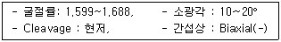
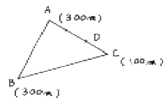
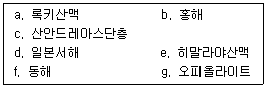
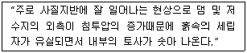
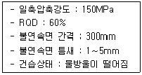

응용지질기사 (2005-03-20 기출문제)
1과목: 암석학 및 광물학
1. X선 회절을 공식화한 Bragg 방정식에서 파장과 회절각을 알면 무엇을 알 수 있는가?
- 격자의 대칭
- 격자의 결합
- 격자면의 간격
- 결정의 형태
(정답률: 알수없음)

2. 원자가 전자를 잃어버릴 경우 생성되는 것은?
- 양이온
- 음이온
- 중성자
- 양성자
(정답률: 알수없음)
3. 다음의 광물 중 등방성 광물은?
- 석영
- 흑운모
- 첨정석
- 전기석
(정답률: 30%)
4. 브라바이스(Bravais)의 공간격자의 종류중에서 등축정계의 격자가 아닌 것은?
- 면심격자
- 체심격자
- 저심격자
- 단일격자
(정답률: 알수없음)
5. 백운모(白雲母)는 다음 광택 중 어느 것에 속하는가?
- 수지광택(樹脂光澤)
- 금강광택(金剛光澤)
- 견사광택(絹絲光澤)
- 진주광택(眞珠光澤)
(정답률: 80%)
6. 다음 광물 중 농도가 높은 소다용액에 넣어 끓이고 씻은 후 크롬산칼륨에 의하여 황색으로 착색되는 광물은?
- 형석
- 석영
- 중정석
- 방해석
(정답률: 알수없음)
7. 동일한 결정구조를 가진 광물들의 성질에 관한 다음 설명 중에서 틀린 것은?
- 구성원자의 크기가 클수록 경도가 높다.
- 구성원자의 원자량이 클수록 비중이 크다.
- 구성원자의 비중이 클수록 경도가 높다.
- 구성원자의 크기가 클수록 단위포의 크기가 크다.
(정답률: 알수없음)
8. 편광현미경 하에서 어떤 광물을 관찰하여 다음과 같은 결과를 얻었다. 이 광물은?

- 석영
- 정장석
- 투각섬석
- 인회석
(정답률: 알수없음)
9. 퍼어다이트(Perthite)의 생성을 설명하여주는 것은?
- 유질동상
- 동질이상
- 고용체
- 용리
(정답률: 65%)
10. Al2SiO5 광물들 중에서 비교적 고압환경에서 생성된 변성암에서 발견될 수 있는 것은?
- 남정석(kyanite)
- 규선석(sillimanite)
- 홍주석(andalusite)
- 강옥(corundum)
(정답률: 60%)
11. 비교적 얕은 곳에서 잔물결이나 유동하는 물의 작용이 퇴적물 표면에 미쳐서 나타나는 파상(波狀)의 자국이 지층중에 그대로 보존되어 있는 구조는?
- 물결자국(ripple mark)
- 사층리(cross-bedding)
- 건열(mud-crack)
- 결핵체(concretion)
(정답률: 100%)
12. 다음 변성암 중 단층의 작용에 의한 파쇄변성작용으로 형성된 것이 아닌 것은?
- 압쇄암(mylonite)
- 슈도타킬라이트(pseudotachylite)
- 안구상 편마암(augen gneiss)
- 호상 편마암(banded gneiss)
(정답률: 알수없음)
13. 원암과 변성암과 관계가 옳게 연결된 것은?
- 셰일 → 규암
- 사암 → 점판암
- 석회암 → 대리암
- 화강암 → 사문암
(정답률: 알수없음)
14. 석영이 10% 미만이며, 유색광물은 주로 흑운모, 각섬석, 휘석 등이고, 장석은 An50 이상인 회사장석으로 주로 구성된 심성암은?
- 토날라이트(tonalite)
- 반려암(gabbro)
- 섬록암(diorite)
- 몬조니암(monzonite)
(정답률: 82%)
15. 화산암에 비교적 잘 발달되어 있는 기공에 2차적으로 옥수, 불석, 방해석 등의 광물질이 채워져 있을 때의 구조를 무엇이라 하는가?
- 구과상구조
- 유상구조
- 행인상구조
- 구상구조
(정답률: 60%)
16. 다음 중 현무암질 마그마로부터 가장 먼저 정출되는 광물은?
- 흑운모
- 각섬석
- 감람석
- 휘석
(정답률: 알수없음)
17. 다음 광물 중 그라이젠화 작용(greisenization)과 관계가 없는 광물은?
- 규회석
- 백운모
- 전기석
- 석영
(정답률: 알수없음)
18. 편마암을 편암과 구별할 때 편마암이 나타내는 특성은?
- 석영과 장석류의 재결정이 현저히 발달되어 있다.
- 석영과 운모의 재결정이 현저히 발달되어 있다.
- 석영과 점토광물이 현저히 발달되어 있다.
- 운모와 점토광물이 현저히 발달되어 있다.
(정답률: 알수없음)
19. 속성작용(diagenesis)에 대한 설명 중 옳지 않은 것은?
- 다짐작용을 수반한다.
- 새로운 물질첨가를 수반한다.
- 변성작용을 수반한다.
- 광물상의 교대작용을 수반한다.
(정답률: 73%)
20. 다음 중 퇴적암과 그 구성성분이 바르게 짝지어진 것은?
- 쳐트 - SiO2
- 돌로스톤 - CaSO4
- 석회암 - CaMg(CO3)2
- 암염 - Ca5(PO4)3
(정답률: 알수없음)
2과목: 구조지질학
21. 어느 지층이 A점, B점, C점에 노출되어 있다면 그 지층의 주향방향은?

- AB방향
- BC방향
- AC방향
- BD방향
(정답률: 알수없음)
22. 주향 이동 운동(strike-slip movement)이 지진 메카니즘(mechanism)으로 작용하는 곳은?
- 해구(trench)
- 해령(oceanic ridge)
- 변환단층(transform fault)
- 순상지(shield)
(정답률: 알수없음)
23. 돔(dome)구조를 나타낸 구조등고선을 옳게 설명한 것은?
- 동심원상인데 중심부의 것이 낮은 등고선이다.
- 거의 평행으로 놓이고 주변의 등고선이 높다.
- 동심원상이고 주변부의 등고선이 낮다.
- V자형을 이루고 중심부의 것이 높다.
(정답률: 75%)
24. 화강암과 같은 등방질(等方質, isotropic)암석이 풍화작용으로 하중(荷重)이 감소될 때 생기는 절리는?
- 주상절리(columnar joint)
- 층상절리(sheeting)
- 우상절리(feather joint)
- 경사절리(dip joint)
(정답률: 알수없음)
25. 최소응력방향에 대하여 직각방향으로만 형성되는 지질구조는?
- 주향이동단층(strike-slip fault)
- 역단층(reverse fault)
- 인장절리(extensional joint)
- 전단절리(shear joint)
(정답률: 알수없음)
26. 대양지각에서 대륙지각쪽으로 갈수록 어떤 성분이 증가하는가?
- K
- Al
- Ca
- Mg
(정답률: 알수없음)
27. 우리나라의 추가령 열곡 같은 구조는 다음 중 어디에 가장 가까운가?
- 협곡(canyon)
- 단층곡(fault valley)
- 메사(mesa)
- 뷰트(butte)
(정답률: 알수없음)
28. Isopach map은 석유탐사 등에서 많이 이용되고 있다. 이는 다음 어느 것을 표시한 도면인가?
- 지층의 두께
- 지층의 암상
- 지하에 있는 습곡
- 동일화석의 분포
(정답률: 알수없음)
29. 다음의 암석 내에 발달할 수 있는 면구조가 잘못 연결된 것을 어느 것인가?
- 편암 - 편리
- 편마암 - 사층리
- 슬레이트 - 점판 벽개
- 사암 - 분급층리
(정답률: 알수없음)
30. 다음 중 지층의 역전여부를 판단할 수 있는 단서가 될 수 없는 것은?
- 베개용암(Pillow lava)
- 주상절리(columnar joint)
- 점이층리(graded bedding)
- 사층리(cross bedding)
(정답률: 64%)
31. 모나드녹크(monadnock)에 대한 설명이 아닌 것은?
- 침식윤회 모델에 의하면 노년기 지형에 속한다.
- 이 시기에는 하곡의 폭이 확대되며 하곡 양측사면 경사도가 완만해 진다.
- 호주 중앙부의 Ayers Rock이 대표적인 예이다.
- 준평원기 바로 전에 발달하는 지형이다.
(정답률: 알수없음)
32. 판구조론에 입각한 형성 기원이 대륙-해양판 섭입(subduction)과 관련된 지체 구조적 현상만 나열한 것은?

- a, c, e, f
- b, d, e, f
- b, d, f, g
- a, d, f, g
(정답률: 50%)
33. 암석과 기공의 비율이 각각 20%와 80%인 균질한 부석(pumice)이 있다. 부석에 가해진 전체 평균 응력이 24 MN/m2 이고 유체를 함유한 기공에 대한 응력이 12 MN/m2 이라면, 부석의 암석 부분에 가해진 평균 하중은?
- 36 MN
- 72 MN
- 168 MN
- 24 MN
(정답률: 알수없음)
34. 용암 중에 포함되어 있던 기체가 빠져 나가다가 용암이 굳어지면 그대로 잡혀서 고결된 화산암중에 구멍으로 남게 된다. 이러한 구조는 다음 중 어느 것인가?
- 미아롤리틱구조
- 구과상구조
- 행인상구조
- 다공상구조
(정답률: 알수없음)
35. 리히터 규모 스케일에서 규모 7의 지진은 규모 5의 지진보다 얼마나 더 많은 에너지를 방출하는가?
- 2배
- 100배
- 200배
- 900배
(정답률: 알수없음)
36. 다음 중 저속도층(low velocity zone)이 위치하는 곳은?
- 암권(lithosphere)
- 연약권(asthenosphere)
- 하부맨틀(lower mantle)
- 핵(core)
(정답률: 알수없음)
37. 상부가 대륙지각으로 이루어진 두 판의 충돌에 의해 형성된 산맥이 아닌 것은?
- 안데스 산맥
- 알프스 산맥
- 우랄 산맥
- 히말라야 산맥
(정답률: 알수없음)
38. 지자기의 줄무늬가 대칭적으로 발견되는 곳은?
- 발산경계
- 수렴경계
- 변환단층 경계
- 충돌경계
(정답률: 알수없음)
39. 지향사(地向斜)에 대한 설명 중 맞는 것은?
- 침강운동이 계속되며 두꺼운 지층이 퇴적되고 있는 하천지대(河川地帶)이다.
- 침강운동이 계속되며 엷은 지층이 퇴적되고 있는 천해지대(淺海地帶)이다.
- 침강운동이 계속되며 두꺼운 지층이 퇴적되고 있는 천해지대(淺海地帶)이다.
- 침강운동이 계속되며 엷은 지층이 퇴적되고 있는 delta 지역이다.
(정답률: 알수없음)
40. 단층(fault)과 절리(joint)를 구분하는 가장 큰 기준이 되는 것은?
- 변위
- 두께
- 연장성
- 생성시기
(정답률: 알수없음)
3과목: 탐사공학
41. 다음의 단위 중 S.P탐사의 측정단위는?
- Milivolt
- ohm-㎝
- γ
- p.p.m
(정답률: 알수없음)
42. 육상지진탐광(陸上地震探鑛)에 사용되는 주된 비폭약진원(非爆藥震源)은 무엇인가?
- 플렉소티르(Flexotir)
- 바이브로사이스(Vibroseis)
- 다이나마이트(Dynamite)
- 에어건(air gun)
(정답률: 알수없음)
43. 다음 중 중력탐사에 가장 많이 쓰이고 있는 것은?
- 중력편차계
- 진자
- 중력계
- E℧tv℧s 편차계
(정답률: 알수없음)
44. 다음 중 wave전파와 관계가 없는 것은?
- Huygens의 원리
- Fermat의 원리
- Snell의 법칙
- Faraday의 법칙
(정답률: 알수없음)
45. 지화학 탐사 중 광역 지화학 탐사에 적합하지 않는 대상 시료는 다음 중 무엇인가?
- 자연수
- 표사
- 중사
- 암석
(정답률: 알수없음)
46. 탄성파 탐사의 디지털 자료에 있어 측점시간 간격(sampling time)이 2㎳ 이면 나이퀴스트(Nyquist) 주파수는?
- 500㎐
- 250㎐
- 160㎐
- 80㎐
(정답률: 90%)
47. 물리탐사 자료처리에서 자료측정 고도를 상향연속(upward continuation) 혹은 하향연속(downward continuation)하는 것은 다음 중 어느 탐사인가?
- 전기탐사
- 탄성파탐사
- 자력탐사
- 전자탐사
(정답률: 46%)
48. 중력은 지구의 중심으로부터 멀리 떨어질수록 적어지는데 대략 지상에서 1m 상승함에 따라 얼마정도 낮아지는가?
- 0.03mgal
- 0.3mgal
- 3mgal
- 30mgal
(정답률: 47%)
49. 다음 중 중력탐사자료 보정에 포함되지 않는 것은?
- 부게(Bourguer)보정
- 동보정(normal moveout correction)
- 지형보정
- 고도보정
(정답률: 알수없음)
50. 다음 중 핵자력계(proton-precession magnetometer)의 장점에 속하지 않는 것은?
- 연속측정이 가능하다.
- 다른 자력계에 비하여 정밀도가 높다.
- 항공탐사에 매우 유용하다.
- 측정시 측정방향을 고려할 필요가 없다.
(정답률: 54%)
51. 국내 암반지하수탐사에 가장 효과적으로 적용되는 탐사법은 어느 것인가?
- 전기비저항탐사
- 탄성파굴절법탐사
- 중력탐사
- 자력탐사
(정답률: 알수없음)
52. 다음 중 자력탐사의 일변화(diurnal variation)에 가장 영향을 끼치는 것은 어느 것인가?
- 태양
- 달
- 유도전자장
- 자기폭풍
(정답률: 알수없음)
53. 일반적으로 반암동(porphyry copper) 광상의 지화학탐사에서 지시원소(pathfinder)가 되는 것은?
- Nb
- Ti
- Mo
- U
(정답률: 70%)
54. 지자장의 세기가 50000감마인 지역에 화강암이 분포한다. 이 화강암의 대자율이 50 × 10-5cgs emu일 경우 자화량(磁化量, 혹은 磁化强度)은?
- 25감마
- 250감마
- 10감마
- 100감마
(정답률: 62%)
55. 지진에 의한 가옥파괴는 주로 탄성파중 어느 파에 의한 것인가?
- P 파
- S 파
- P 파와 S 파
- 표면파
(정답률: 알수없음)
56. 다음 중 Streamer Cable이 이용되는 탐사는?
- 자력탐사(육상)
- 중력탐사
- 검층탐사
- 반사법 탄성파탐사(해상)
(정답률: 19%)
57. 다음 중 Common-depth-point shooting의 기능은?
- 탄성파탐사에서의 잡음 제거
- 전자탐사에서의 잡음 제거
- 방사능탐사에서의 잡음 제거
- 자연전위법에서의 잡음 제거
(정답률: 알수없음)
58. 신틸레이션 미터(scintillation meter)에서 가장 많이 사용되는 γ(감마)선 검출 결정(結晶)은 다음 중 어느 것인가?
- Si
- Ge
- NaI
- 석영
(정답률: 알수없음)
59. 다음 중 전자탐사에 관한 설명으로 틀린 것은?
- 작업이 신속하다.
- 항공탐사가 가능하다.
- 표토층의 전기비저항이 매우 클 때도 효과적인 탐사방법이다.
- 이상곡선이 광체 상부에 광범위하게 나타난다.
(정답률: 알수없음)
60. 지구화학적 분산에 대한 설명 중 틀린 것은?
- 분산은 기계적 및 화학적 과정의 상호작용으로 일어난다.
- 순환지하수나 식물의 활동으로 들어온 물질이 침전해서 형성된 것을 후생1차 분산모형이라 한다.
- 2차 분산은 천부 암석의 열거와 절리에서 일어난다.
- 심부 암석의 열거와 암석의 내부 공극에서 1차 분산이 일어난다.
(정답률: 46%)
4과목: 지질공학
61. 다음 중 투수량 계수의 설명으로 맞는 것은?
- 수두가 단위량만큼 변했을 때 대수층 단위 표면적당 저유체에서 유출하는 지하수량이다.
- 동수구배가 1 : 1일 때 완전 포화된 대수층 전체 층후 중 폭 1ft당 하루동안 유출될 수 있는 지하수량이다.
- 단위 수위 강하량 당 산출량이다.
- 양수전 자연수위에서 양수정지후 회복된 자연수위와의 차이를 양수량으로 나눈 값이다.
(정답률: 40%)
62. 시추주상도에 일반적으로 기재되는 항목이 아닌 것은?
- 암석의 종류
- 풍화상태
- 시추작업위치
- 암반등급
(정답률: 90%)
63. 어떤 흙시료의 공시체가 주응력 σ3 = 1.0㎏/㎝2, σ1 = 4.0㎏/㎝2을 가했을 때 파괴가 일어났다면 전단응력은? (단, 파괴 활동면은 수평면과 60°의 각도를 이루었다고 한다.)
- 1.30㎏/㎝2
- 1.75㎏/㎝2
- 3.15㎏/㎝2
- 3.50㎏/㎝2
(정답률: 55%)
64. 유선망(flow net)의 특성 중 잘못된 것은?
- 인접한 2개의 유선 사이를 흐르는 침투수량은 서로 같다.
- 유선망을 이루는 사각형은 이론상 직사각형이다.
- 인접한 2개의 등수두선 사이의 손실수두는 서로 같다.
- 흙이 균질할 때 흙속의 침투수는 수두경사가 급한 방향으로 흐른다.
(정답률: 알수없음)
65. 다음 점토 광물 중 물을 흡수할 경우 팽창성이 가장 큰 것은?
- chlorite
- kaolinite
- illite
- montmorillonite
(정답률: 64%)
66. 습곡구조에 터널을 굴착할 때 미치는 영향이 아닌 것은?
- 향사부에서는 지압이 증가할 수 있다.
- 배사부 정점부에서는 지표로부터 용수가 침투할 가능성이 적다.
- 향사부 아래에 불투수층이 있는 경우는 터널에서 용수가 있을 수 있다.
- 배사부에서는 지층이 아치작용에 의해 지압이 경감될 수 있다.
(정답률: 42%)
67. 모래로 채워진 튜브를 이용한 유체통과 실험을 통하여 Darcy의 법칙을 설명할 때, 다음 중 틀린 것은?
- 튜브를 통과한 물의 양은 튜브의 단면적과 비례한다.
- 튜브를 통과한 물의 양은 튜브 양끝의 수두차에 비례한다.
- 튜브를 통과한 물의 양은 튜브의 길이에 비례한다.
- 튜브에 모래대신 투수성이 매우 낮은 점성토로 채워졌다면 Darcy의 법칙을 적용할 수 없다.
(정답률: 알수없음)
68. 다음에서 설명하는 현상은?

- 동상현상
- 연화현상
- 모세관현상
- 분사현상
(정답률: 82%)
69. 다음 중 수두(hydraulic head)에 관한 설명으로 적합하지 않은 것은?
- 전체수두는 단위중량의 물이 갖는 에너지의 합을 의미한다.
- 물의 흐름은 위치수두가 작은 지점에서 큰 지점으로 향한다.
- 전체수두는 압력수두와 위치수두, 속도수두의 합으로 주어진다.
- 수두손실은 물과 매질 사이의 마찰에 의해 발생한다.
(정답률: 알수없음)
70. 다음의 연약지반 처리방법중에서 모래에 가장 적합한 방법은?
- 진동다짐
- 열처리
- 전기침투
- 선행압축
(정답률: 알수없음)
71. 그라우팅(grouting)은 암반의 역학적 성질을 개량하고 물의 침투를 억제할 목적으로 기초 암반에 시추공을 천공하여 그라우트액을 주입, 충전하는 공법을 말한다. 다음 중 압밀 그리우팅 공법에 대한 설명이 아닌 것은?
- 얕은 깊이의 암반에 대해 적용되며 그라우팅을 위한 시추공은 10 m를 넘지 않는다.
- 절리가 많은 기반암의 강도를 증가시키고 투수계수를 감소시키는데 사용된다.
- 기초 암반의 균일성을 증가시켜 부등침하와 불균형 응력조건을 개량할 수 있다.
- 구조물 주변의 기초 암반에 대하여 벽체형태로 시행하며 댐의 누수를 제어하는데 사용된다.
(정답률: 37%)
72. RMR 분류를 위해 실시한 암반조사에서 다음과 같은 결과를 얻었다면, 이 암반의 추정 내부 마찰각은 얼마인가?

- 15 ∼ 25°
- 25 ∼ 35°
- 35 ∼ 45°
- 45° 이상
(정답률: 알수없음)
73. 부피가 200cm3 인 원주형 암석 시험편이 있다. 시험편의 포화질량은 700g , 건조질량은 690g 인 경우 시험편의 공극률은 얼마인가?
- 3%
- 4%
- 5%
- 6%
(정답률: 알수없음)
74. 소성지수를 바르게 나타낸 것은?
- 소성한계 + 액성한계
- 소성한계 - 액성한계
- 액성한계 - 소성한계
- 액성한계 + 소성한계
(정답률: 알수없음)
75. 암석의 물리적 풍화작용과 관계 없는 것은?
- 물의 동결, 융해작용
- 온도변화
- 염분의 결정화
- 산성비의 작용
(정답률: 알수없음)
76. 암석의 공극 구조와 미세균열을 관찰하기 위해 사용할 수 있는 장치는?
- 전자주사현미경
- X선 회절분석장치
- 슈밋트 햄머
- 프로파일 게이지
(정답률: 46%)
77. 기초 암반에 대한 지질조사를 실시하는 경우 이전의 문헌자료 등을 이용하여 예비조사를 하게 되는데 예비조사 항목으로 적당하지 않은 것은?
- 대규모 단층이나 파쇄대의 유무
- 광범위한 풍화층 분포의 유무
- 기반암의 변형계수
- 대규모의 산사태 발생 유무
(정답률: 알수없음)
78. 다른 암석에 비해 비교적 토플링 파괴가 가장 흔하게 발생 되는 지질구조를 가진 암석은?
- 현무암
- 셰일
- 석회암
- 대리석
(정답률: 알수없음)
79. 모래의 투수계수를 측정한 바, 공극비 0.8 일 때 8 × 10-2㎝/sec를 얻었다. 이 모래의 공극비가 0.4 일 때의 투수계수는?
- 2.0 × 10-2㎝/sec
- 4.0 × 10-2㎝/sec
- 1.6 × 10-1cm/sec
- 3.2 × 10-1㎝/sec
(정답률: 알수없음)
80. 조립질 화강암의 풍화토에 가장 적합한 통일분류법의 기호는?
- MH
- SP
- SM
- SC
(정답률: 알수없음)
5과목: 광상학
81. 흑연은 주로 다음 어느 광상에서 산출되는가?
- 화성광상
- 퇴적광상
- 변성광상
- 열수광상
(정답률: 알수없음)
82. 화강암중의 장석, 운모, 각섬석 등이 광화 가스의 교대작용으로 리시야 운모로 변화하고 또한 새로운 석영이 다량 생기게하는 작용은?
- 규화작용
- 프로피라이트화작용
- 그레이젠화작용
- 리시야운모화작용
(정답률: 80%)
83. 각 광상 생성의 온도범위를 나열하였다. 틀린 것은?
- 정마그마성 광상 : 800 ∼ 1500℃
- 페그마타이트 광상 : 575 ∼ 750℃
- 접촉교대 광상 : 800 ∼ 1000℃
- 기성 광상 : 370 ∼ 500℃
(정답률: 알수없음)
84. 다음 중 페그마타이트 광상에서 산출되는 광물은?
- 펜트란다이트
- 스페리라이트
- 베릴륨
- 황동석
(정답률: 알수없음)
85. 침강(沈降)의 지질학적 증거가 되지 않은 것은?
- 익곡(溺谷)
- 해안단구(海岸段丘)
- 심해삼림(沈海森林)
- 수몰육지(水沒陸地)
(정답률: 알수없음)
86. 표성광상(이차 유화부화광상)이 이루어지는데 선행조건이 되는 것은?
- 환원작용
- 교대작용
- 열변성작용
- 산화작용
(정답률: 알수없음)
87. 강원도 연화광산에서 주로 산출되는 광석광물은?
- 자철석
- 섬아연석
- 회중석
- 황동석
(정답률: 알수없음)
88. 변성광물로서 양기석(Actinolite)이 생성되었다면 변성 전의 광물 조성으로 인정되는 것은 다음 어느 것인가?
- 석회암 중에 석영이 불순물로 있는 것
- 돌로마이트 중에 철분과 석영이 불순물로 있는 것
- 석회암 중에 점토가 불순물로 있는 경우
- 돌로마이트 중에 방해석이 함유된 것
(정답률: 알수없음)
89. 한국식 금광맥은 다음 중 어느 형에 속하는가?
- 페그마타이트형 광맥
- 천열수형 광맥
- 중·심열수형 광맥
- 기성 광맥
(정답률: 알수없음)
90. 우리나라에서 무연탄이 가장 많이 배태되어 있는 곳은?
- 중생대 대동계층
- 고생대 평안계층
- 고생대 조선계층
- 캠브리아기 양덕통
(정답률: 알수없음)
91. 흑연 광상에서 양질(良質)의 광석 조건으로 틀린 것은?
- 회분이 적은 것
- 내화도가 강한 것
- 철 및 알카리 광물을 갖지 않는 것
- 결정편이 작은 것
(정답률: 알수없음)
92. 우리나라의 주요 동광상구는?
- 태백산광화대
- 경기광화대
- 옥천광화대
- 경남광화대
(정답률: 알수없음)
93. 14C 방법으로 최대 몇 년까지의 지질시대를 측정할 수 있는가?
- 30,000년
- 40,000년
- 50,000년
- 11,000 ~ 12,000년
(정답률: 알수없음)
94. 접촉교대 광상에서 산출되는 광물중 가장 후기에 형성된 것은?
- 황동석, 방연석, 섬아연석
- 전기석, 부석, 주석
- 투휘석, 규회석, 투각섬석
- 석류석, 녹렴석, 규회철석
(정답률: 알수없음)
95. 모호불연속면(Mohorovicic discontinuity)이란 다음의 어느 경계면을 말하는가?
- 해양지각과 상부 퇴적암의 경계
- 지각과 맨틀의 경계
- 맨틀과 외핵의 경계
- 화강암 저반과 퇴적암의 경계
(정답률: 84%)
96. 다음 중 스카른(Skarn) 광물이 아닌 것은?
- 석류석
- 투휘석
- 녹렴석
- 엽납석
(정답률: 알수없음)
97. 지각을 구성하고 있는 성분 중 5% 이상을 점하고 있는 원소는 다음 중 어느 것인가?
- Cu
- Pb
- Fe
- Zn
(정답률: 알수없음)
98. 다음 중 지하수의 작용으로 일어난 것이 아닌 것은?
- 카르스트(karst)지형
- 사태(landslide)
- 폿호올(pot hole)
- 크립(creep)
(정답률: 알수없음)
99. 다음 중 보옥사이트(Bauxite)광상의 성인으로 설명될 수 있는 것은?
- 회장암을 근원암으로 한 풍화잔류광상
- 화강암을 근원암으로 한 사광상
- 섬장암을 근원암으로 한 풍화잔류광상
- 섬록암을 근원암으로 한 산화부화광상
(정답률: 알수없음)
100. Australia의 Bendigo 금광상은 어떤 광맥으로 유명한가?
- 망상광맥
- 제상광맥
- 안상광맥
- 각력충진광맥
(정답률: 알수없음)